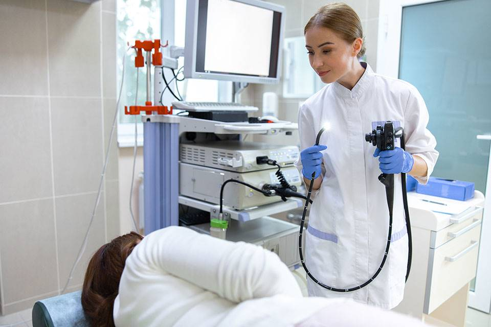

Urologie
Endocrinologie
Anesthésie et réanimation
Chirurgie générale
Orthopédie
Gastro-entérologies
Qu’est-ce que l’urologie ?
Spécialité médico-chirurgicale, l’urologie prend en charge les affections de l’appareil urinaire de la femme et de l’homme (vessie, uretère, urètre). Elle couvre aussi l’appareil génital et reproducteur masculin (prostate, pénis, testicules).
Que soigne un chirurgien urologue ?
L’urologue soigne de multiples affections en rapport avec l’appareil urinaire :
-rétention urinaire ou incontinence,
-infections,
-lésions,
-malformations
-cancers de l’appareil urinaire etc..
Le médecin urologue traite aussi l’infertilité masculine , les troubles de l’érection et de l’éjaculation, les cancers des testicules, de la prostate… S’il peut prendre en charge des pathologies sans avoir recours à la chirurgie (colique néphrétique entraînant des calculs rénaux notamment), de nombreuses maladies de cette spécialité sont traitées par voie chirurgicale.
Comment se passent le diagnostic et les chirurgies en urologie ?
Pour émettre un diagnostic, l’urologue interroge son patient sur ses symptômes et ses antécédents médicaux et familiaux avant de procéder à un examen clinique et, en fonction des troubles, à un examen du périnée et/ou à un toucher rectal. Il peut aussi prescrire des examens complémentaires : ECBU (examen cytobactériologique des urines), échographie, endoscopie, radiographie, bilan urodynamique, cystoscopie, etc.
Les domaines d'expertise
Les domaines d'expertise de l'urologie comprennent les maladies et les affections suivantes :
-Les infections urinaires.
-Les calculs rénaux et les calculs vésicaux (calculs dans les reins ou la vessie).
-Les troubles de la prostate, tels que l'hypertrophie bénigne de la prostate (HBP) ou le cancer de la prostate.
-Les troubles de la vessie, tels que l'incontinence urinaire ou la cystite interstitielle.
-Les troubles des organes reproducteurs masculins, comme l'impuissance (dysfonction érectile) ou l'infertilité masculine. Les troubles des organes reproducteurs féminins liés à l'urologie, tels que les fistules vésico-vaginales.
Qu’est-ce que l’anesthésie et réanimation ?
L'anesthésie-réanimation est une spécialité médicale qui se concentre sur la gestion de la douleur, le maintien de la fonction vitale et la surveillance des patients avant, pendant et après une intervention chirurgicale ou un acte médical invasif.
L'anesthésie consiste à induire une perte temporaire de sensation ou de conscience afin de permettre des procédures médicales ou chirurgicales sans douleur. L'anesthésiologiste évalue le patient, discute des options d'anesthésie et choisit la technique la plus appropriée en fonction de divers facteurs, tels que le type d'intervention, l'état de santé du patient, les antécédents médicaux, les médicaments pris, etc.
Les principales formes d'anesthésie
1-Anesthésie générale : Elle provoque une perte de conscience contrôlée, permettant au patient d'être complètement endormi pendant l'intervention chirurgicale.
2-Anesthésie régionale : Elle engourdit une région spécifique du corps, comme la moelle épinière (anesthésie rachidienne ou péridurale) ou un membre (anesthésie locorégionale).
3-Anesthésie locale : Elle implique l'injection d'un anesthésique directement dans la zone à traiter pour engourdir la zone spécifique.
Une fois l'intervention terminée notre l'anesthésiologiste surveille étroitement le patient pendant la phase de réveil, veillant à ce que les fonctions vitales (respiration, fréquence cardiaque, pression artérielle, etc.) se rétablissent normalement. Dans les cas où des complications surviennent après la chirurgie.
Qu’est-ce que l’endocrinologie ?
L’endocrinologie est la spécialité médicale s’intéressant aux hormones, à leurs effets sur le fonctionnement du corps – le métabolisme - et aux maladies qui y sont liées. Les hormones sont sécrétées par différentes glandes : hypophyse, thyroïde, glandes surrénales...
Quand allez voir un endocrinologue ?
De nombreuses maladies sont dues à des dérèglements hormonaux : diabète de type 1, diabète de type 2, troubles de la croissance, hypothyroïdie, hyperthyroïdie, troubles du poids…
Que fait, soigne, un endocrinologue lors d’une consultation ?
Lors d’une première visite, l’endocrinologue interroge le patient sur ses symptômes :
perte ou prise de poids inexpliquée, fatigue, douleurs, troubles de l’humeur...
Il est recommandé de se munir des résultats d’examens (analyses de sang, examens radiologiques...) et comptes-rendus médicaux dont on dispose pour éviter la répétition d’examens inutiles et faciliter l’établissement du diagnostic.
Le cas échéant, l’endocrinologue peut demander des examens complémentaires : analyses de sang particulières, imagerie, ponctions, etc.
Comment se passent les traitements en endocrinologie ?
Les traitements en endocrinologie dépendent du type de dérèglement hormonal. A titre d’exemple, un déficit hormonal, comme dans le cas d’une hypothyroïdie (pathologies de la thyroïde), peut se traiter par un apport quotidien en hormones thyroïdiennes de substitution. L’hyperthyroïdie peut, quant à elle, se traiter à l’aide de médicaments ou nécessiter une intervention chirurgicale.
Comment traiter les différents types de diabète ?
Il existe trois types principaux de diabète :
le diabète de type 1, apparaissant dès l’enfance ;
le diabète gestationnel, apparaissant lors d’une grossesse et disparaissant souvent après l’accouchement ;
le diabète de type 2, le plus courant, apparaissant après 40 ans. Le diabète est lié à un défaut d’effet d’une hormone appelée insuline. La prise en charge impose une adaptation de l’alimentation. Si elle ne suffit pas à normaliser le taux de sucre dans le sang – la glycémie – des médicaments ou l’injection régulière d’insuline peuvent être nécessaires.
Elsan prend en charge ces pathologies, en utilisant les nouvelles technologies de mesure du glucose en continu : holter glycémique, pompe sous-cutanée à insuline...
Quels sont les examens en endocrinologie ?
Un médecin endocrinologue commencera par examiner son ou sa patiente, en auscultant notamment son cœur ou en palpant sa thyroïde (pour détecter une éventuelle pathologie de la thyroïde)... Il peut aussi prescrire des tests sanguins et urinaires complémentaires.
Qu’est-ce que la Chirurgie générale ?
La chirurgie générale et digestive est une spécialité médicale qui englobe à la fois la chirurgie générale et la chirurgie digestive. Elle se concentre sur le diagnostic, le traitement chirurgical et la prise en charge des affections liées au système digestif, ainsi que sur d'autres interventions chirurgicales non spécialisées.
Les domaines d'expertise
La chirurgie générale comprend un large éventail d'interventions chirurgicales qui ne sont pas limitées à un système ou à un organe spécifique.
Les chirurgiens généraux peuvent être impliqués dans :
-la chirurgie abdominale
-la chirurgie mammaire
-la chirurgie de la paroi abdominale
-la chirurgie endocrinienne
-la chirurgie de la peau et des tissus mous
-la chirurgie de l'obésité, la chirurgie vasculaire
-la chirurgie de transplantation d'organes
-et bien d'autres.
La chirurgie digestive se concentre spécifiquement sur les affections du système digestif, qui comprend :
-l'oesophage
-l'estomac
-l'intestin grêle
-le côlon
-le rectum
-le foie
-les voies biliaires
-le pancréas
-la rate et d'autres organes associés.
Les chirurgiens spécialisés en chirurgie digestive traitent des conditions telles que :
les tumeurs digestives (cancers)
les hernies hiatales, les ulcères gastriques
les diverticulites
les maladies inflammatoires de l'intestin
les calculs biliaires,
les affections de la vésicule biliaire,
les maladies du pancréas, etc.
Les chirurgiens spécialisés en chirurgie générale et digestive utilisent différentes techniques chirurgicales en fonction de la nature et de la gravité de l'affection, ainsi que des caractéristiques individuelles du patient. Cela peut inclure des interventions ouvertes traditionnelles, des interventions laparoscopiques/minimalement invasives
le role de la La chirurgie générale
La chirurgie générale et digestive joue un rôle essentiel dans le diagnostic, le traitement et la prise en charge des affections du système digestif, ainsi que dans d'autres conditions nécessitant une intervention chirurgicale non spécialisée. Les chirurgiens travaillent en étroite collaboration avec d'autres professionnels de la santé, tels que les gastro-entérologues, les oncologues, les radiologues et les anesthésiologistes, pour assurer des soins complets et une approche multidisciplinaire dans le traitement des patients.
Qu’est-ce que l’orthopédie ?
L’orthopédie est la discipline chirurgicale qui étudie les affections, les traumatismes ainsi que les déformations de l’appareil locomoteur, c’est-à-dire les membres supérieurs, les membres inférieurs ainsi que la colonne vertébrale. Elle prend en charge les pathologies de l’os, particulièrement les fractures, mais également celles affectant les ligaments, les muscles, les tendons et les articulations.
Traumatologie
La traumatologie, bien qu’intimement liée à l’orthopédie, est une discipline bien distincte de cette dernière. L’orthopédie traite des pathologies de l’organe de locomotion qu’elles soient congénitales ou acquises, tandis que la traumatologie traite les lésions subies par le corps suite à un traumatisme (fracture, brûlure…). Une prise en charge en traumatologie nécessite parfois un traitement orthopédique, tout comme l’inverse est possible. Dans les cas des polytraumatisés, une prise en charge multidisciplinaire est souvent indispensable, faisant intervenir plusieurs branches de la médecine comme la neurochirurgie, la cardiologie…
Qu’est-ce que l’endocrinologie ?
L’hépato-gastro-entérologie est la spécialité médicale qui s’intéresse aux organes de la digestion, leurs fonctionnements, leurs maladies et les moyens de les soigner. Les organes constituant le système digestif sont :
-le tube digestif (œsophage, estomac, intestins, le colon et le rectum)
-le foie
-le pancréas
Que fait le gastro-entérologue ?
Il dépiste, diagnostique et traite des maladies du système digestif aussi variées que :
-les maladies inflammatoires de l’intestin (rectocolite hémorragie, Maladie de Crohn…)
-les maladies du foie et des voies biliaires (calculs, tumeurs…)
-les hépatites
-les hémorragies digestives
-les maladies du pancréas
-les cancers digestifs
la coloscopie
La coloscopie est un examen médical qui permet de visualiser l'intérieur du côlon (gros intestin) et du rectum à l'aide d'un instrument appelé coloscope. Cet instrument est un tube flexible équipé d'une caméra et de sources lumineuses, ce qui permet au médecin de voir les parois internes du côlon en temps réel sur un écran.
l'objectif de la coloscopie
L'objectif principal de la coloscopie est de détecter d'éventuelles anomalies, telles que des polypes, des tumeurs, des inflammations ou des saignements dans le côlon. Ces anomalies peuvent être à l'origine de symptômes tels que des douleurs abdominales, des changements dans les habitudes intestinales, ou des saignements rectaux. La coloscopie est également un moyen efficace de dépister le cancer du côlon.
Comment se préparer à une coloscopie ?
Tout d’abord, le patient est informé par le médecin qui pratiquera la coloscopie des enjeux de l’examen : bénéfices, traitements, diagnostic, dépistage du cancer colorectal, mais aussi risques.
Ensuite, si une coloscopie avec anesthésie générale est programmée, une consultation avec un médecin anesthésiste sera également organisée (Si le patient se sent anxieux à l’approche de l’examen, le médecin pourra prescrire un léger anxiolytique).
La veille de la coloscopie, le patient devra ingérer une solution permettant le lavage et l’irrigation du côlon afin que celui-ci soit parfaitement propre pour l’examen. Trois jours avant la coloscopie, un régime sans résidus sera également prescrit.
La fibroscopie
La fibroscopie oeso-gastro-duodénale (FOGD), également appelée endoscopie oeso-gastro-duodénale (EOGD) ou gastroscopie, est un examen qui permet d'explorer les voies digestives hautes comprenant l'œsophage, l'estomac et le duodénum.
orsque cet examen est indiqué pour une évaluation diagnostique simple, il peut être réalisé sans ou avec anesthésie générale. En effet, sous anesthésie locale, cet examen est désagréable mais n’est pas douloureux et ne dure que quelques minutes.
.png)